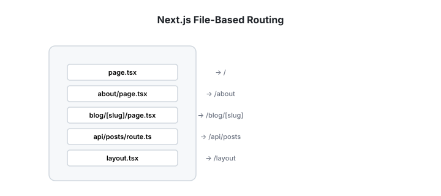
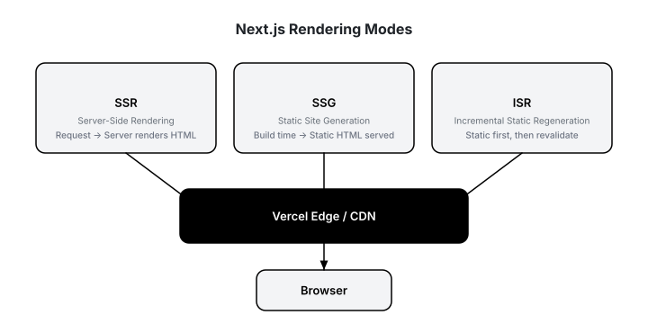
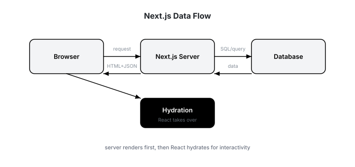
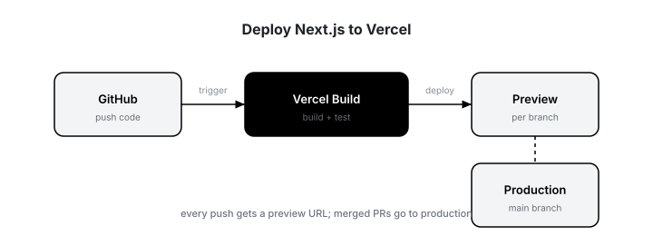

Next.js Full-Stack: SSR, SSG, API Routes, Deployment
Chapter 1
Introduction
Next.js is a React framework that adds server rendering, file-based routing, API endpoints, and optimized production builds. It is the default choice for production React apps because it solves performance and SEO problems that client-only React cannot.
Before you start
- Comfortable with React, hooks, and JSX.
- Basic Node.js and npm knowledge.
- Understand HTTP, JSON, and REST.
What you'll learn
- ✓ App Router vs Pages Router
- ✓ SSR, SSG, and ISR rendering
- ✓ Server and client data fetching
- ✓ API routes with Route Handlers
- ✓ Dynamic routes and layouts
- ✓ Deploy to Vercel
Real-world systems using Next.js
- TikTok uses Next.js for fast, SEO-friendly marketing pages at scale.
- Netflix uses Next.js for its content studio and several consumer surfaces.
- GitHub Copilot docs and marketing run on Next.js for performance and search indexing.
- Stripe uses Next.js for its documentation and customer-facing pages.
- Hulu, Twitch, Nike all use Next.js for production storefronts and landing pages.
Chapter 2
Setup & First App
Next.js is initialized with a single command. It sets up React, TypeScript support, ESLint, Tailwind, and the App Router automatically.
# Create a new Next.js app (App Router enabled) npx create-
next-app@latest my-shop
# Recommended options:
# TypeScript: Yes
# ESLint: Yes
# Tailwind CSS: Yes
# src directory: No
# App Router: Yes
# import alias: @/* cd my-shop
npm run dev
# Open http://localhost:3000// app/page.tsx —
the homepage export default function Home()
{ return ( My Shop Welcome to the store. );
}Checkpoint
Create the app, start the dev server, and confirm the default page loads at
http://localhost:3000
.
Chapter 3
File-Based Routing
In Next.js, files and folders become URLs. There is no separate routing config. The App Router uses
page.tsx
files and nested layouts.
Folders become URLs

app/ ├── page.tsx
# / ├── layout.tsx
# root layout ├── about/ │ └── page.tsx
# /about ├── products/ │ └── page.tsx
# /products └── products/[id]/ └── page.tsx
# /products/123// app/layout.tsx —
wraps every page export const metadata = { title: 'My Shop',
description: 'A modern e-commerce store', }
;
export default function RootLayout({ children }: { children: React.ReactNode }
)
{ return ( My Shop
{children}
);
}Key rule
A route is only public when it contains a
page.tsx
(or
page.js
). Private components live in the same folder but are not routed unless they are in
page.tsx
.
Chapter 4
Rendering Modes
Next.js can render pages on the server at request time (SSR), at build time (SSG), or with a cache revalidation strategy (ISR). Picking the right mode for each page is the core optimization skill.
SSR, SSG, and ISR

SSR
- Fresh data on every request.
- Good for dashboards, search results, personalized pages.
- Default for Server Components in the App Router.
SSG
- HTML generated at build time.
- Fastest response and best for SEO.
- Use for blogs, docs, marketing pages.
ISR
- Static first, then revalidate in background.
- Great for product catalogs and large listings.
- Balanced speed and freshness.
// app/products/page.tsx —
default Server Component (SSR) export default async function ProductsPage()
{ const products = await fetch('https://api.example.com/products',
{ cache: 'no-store' }
);
const list = await products.json();
return ( {list.map((p: any) => {p.name}
)}
);
} // ISR:
revalidate every 60 seconds export const revalidate = 60;
// SSG-like
with fetch caching const data = await fetch('https://api.example.com/categories',
{ next: { revalidate: 3600 }
});Chapter 5
Fetching Data
Server Components can fetch data directly during render, which keeps API secrets off the client and reduces JavaScript shipped to the browser. Client Components handle interactivity and browser APIs.
Server renders first, then React hydrates

// Server
Component — async,
no useEffect export default async function ProductPage({ params }: { params: { id: string }
})
{ const res = await fetch(`https://api.example.com/products/${params.id}`,
{ next: { revalidate: 60 }
});
const product = await res.json();
return ( {product.name} ${product.price}
);
}"use client";
// Client
Component — interactivity in browser import
{ useState }
from 'react';
export default function AddToCart({ productId }: { productId: string }
)
{ const
[qty,
setQty] = useState(1);
return ( setQty(q => q + 1)}>+ {qty}
setQty(q => Math.max(1,
q - 1))}>- Add to cart );
}When to use each
- Server Component : fetch data, access databases, keep secrets private, render static parts.
- Client Component : event handlers, browser APIs, local state, animations.
- A good page mixes both: Server Component fetches, Client Component handles the cart button.
Chapter 6
API Routes
Next.js can be a full-stack framework. Route handlers let you build backend endpoints without a separate server. They run on the same deployment as your frontend, making integration trivial.
// app/api/products/route.ts
import { NextResponse } from "next/server";
const products = [
{ id: "1", name: "Wireless Headphones", price: 199 },
{ id: "2", name: "Mechanical Keyboard", price: 149 },
];
export async function GET() {
return NextResponse.json(products);
}
export async function POST(request: Request) {
const body = await request.json();
const newProduct = { id: String(products.length + 1), ...body };
products.push(newProduct);
return NextResponse.json(newProduct, { status: 201 });
}// Fetch
from the same-origin API in a Server Component export default async function ProductList()
{ const res = await fetch('http://localhost:3000/api/products',
{ cache: 'no-store' }
);
const products = await res.json();
return ( {products.map((p: any) => ( {p.name} — ${p.price}
))}
);
}Real-world pattern
A Next.js app can talk to PostgreSQL, Redis, or Stripe inside route handlers. The client only sees the Next.js URL, never the database password or API keys.
Chapter 7
Dynamic Routes
Dynamic routes let you create one page template for thousands of URLs. A folder named
[id]
captures the segment from the URL, and you can use it to fetch the right data.
// app/products/[id]/page.tsx
export default async function ProductPage({ params }: { params: { id: string }
})
{ const
{ id } = params;
const res = await fetch(`https://api.example.com/products/${id}`,
{ next: { revalidate: 60 }
});
if (!res.ok)
{ return Product not found;
}
const product = await res.json();
return ( {product.name} ${product.price} {product.description}
);
} // Generate
static paths at build time for the 100 top products export async function generateStaticParams()
{ const res = await fetch('https://api.example.com/products?limit=100');
const products = await res.json();
return products.map((p: any) => ({ id: String(p.id) }
));
}Static + dynamic fallback
Use
generateStaticParams
for the most popular pages, and let Next.js render the rest on demand. This is how large e-commerce sites serve millions of product pages fast.
Chapter 8
Deployment
Vercel is the company behind Next.js and the easiest place to deploy. Every push to GitHub gets a preview URL. Merging to main deploys to production.
Git push → preview → production

# Push to GitHub and import the repo in Vercel
# No manual build config needed
git init
git add .
git commit -m "init"
git remote add origin https://github.com/yourname/my-shop.
git
git push -u origin main
# Then:
# 1. Go to vercel.com/new
# 2. Import the repository
# 3. Vercel auto-detects Next.js and builds it
# 4. Every PR gets a unique preview URLProduction checklist
- Set environment variables (database URLs, API keys) in the Vercel dashboard.
-
Use
next/imagefor optimized images. - Enable analytics and speed insights to measure real user performance.
- Configure a custom domain and SSL.
- Test preview URLs before merging to main.
Chapter 9
Capstone: E-Commerce Store
1. What is this project?
Build a production-grade online store with Next.js. This capstone ties together routing, rendering modes, data fetching, API routes, caching, error handling, and deployment. You will create multiple pages, a persistent cart, a checkout flow, and an admin-style order API.
2. What it covers?
-
Homepage
(
/): hero section, featured products, category links. Fetches products with ISR. -
Product listing
(
/products): grid with filtering by category and price sorting. Pagination ready. -
Product detail
(
/products/[id]): dynamic route, reviews, related products, add-to-cart. Static generation for top 20, ISR fallback. -
Cart
(
/cart): Client Component with localStorage persistence, quantity updates, remove items, price summary. -
Checkout
(
/checkout): form with server-side validation, calls order API, shows confirmation. -
Order API
(
/api/orders): creates orders, validates stock, calculates totals, stores in memory or database. -
Search
(
/search?q=...): query parameter-based search page, server-rendered results. - Shared layout : responsive navigation, cart count badge, footer.
- Deployment : Vercel with environment variables and preview deployments.
3. How it is done?
The project is built in 11 steps: shared data layer, homepage with ISR, reusable components, dynamic product pages, cart context and persistence, checkout validation, a server-side order API, search, and a shared navbar. Follow the code below from Step 1 through Step 11.
Folder structure
app/ ├── layout.tsx
# root layout with cart provider ├── page.tsx
# homepage ├── products/ │ ├── page.tsx
# product listing │ └── [id]/ │ └── page.tsx
# product detail ├── cart/ │ └── page.tsx
# cart page ├── checkout/ │ └── page.tsx
# checkout page ├── search/ │ └── page.tsx
# search results ├── api/ │ ├── products/ │ │ └── route.ts
# GET /api/products │ └── orders/ │ └── route.ts
# POST /api/orders components/ ├── Navbar.tsx
# navigation + cart count ├── ProductCard.tsx
# reusable card ├── CartProvider.tsx
# context + localStorage ├── AddToCartButton.tsx
# client interactivity └── CheckoutForm.tsx
# form + validation lib/ ├── products.ts
# product data helpers └── validation.ts
# Zod schemas public/ └── images/
# product imagesStep 1: Shared data layer
// lib/products.ts
export interface Product
{ id: string;
name: string;
price: number;
category: string;
description: string;
image: string;
rating: number;
stock: number;
} // Real-world:
replace with a database call export async function getProducts(): Promise<Product
[]> { const res = await fetch('https://fakestoreapi.com/products',
{ next: { revalidate: 3600 }
});
const data = await res.json();
return data.map((p: any) => ({ id: String(p.id),
name: p.title,
price: p.price,
category: p.category,
description: p.description,
image: p.image,
rating: p.rating.rate,
stock: Math.floor(Math.random() * 50) + 10 }
));
}
export async function getProductById(id: string): Promise<Product | null> { const res = await fetch(`https://fakestoreapi.com/products/${id}`,
{ next: { revalidate: 60 }
});
if (!res.ok) return null;
const p = await res.json();
return
{ id: String(p.id),
name: p.title,
price: p.price,
category: p.category,
description: p.description,
image: p.image,
rating: p.rating.rate,
stock: Math.floor(Math.random() * 50) + 10 }
;
}Step 2: Homepage with ISR
// app/page.tsx
import Link from "next/link";
import { getProducts } from "@/lib/products";
import ProductCard from "@/components/ProductCard";
export const revalidate = 3600;
export default async function Home() {
const products = await getProducts();
const featured = products.slice(0, 4);
return (
<main className="max-w-6xl mx-auto p-6">
{" "}
<section className="bg-gray-100 rounded-2xl p-10 mb-10 text-center">
{" "}
<h1 className="text-4xl font-bold mb-4">Modern Mart</h1>{" "}
<p className="text-lg text-gray-600 mb-6">
Fast, SEO-friendly e-commerce built with Next.js.
</p>{" "}
<Link
href="/products"
className="px-6 py-3 bg-black text-white rounded-lg"
>
{" "}
Shop now{" "}
</Link>{" "}
</section>{" "}
<h2 className="text-2xl font-bold mb-4">Featured Products</h2>{" "}
<div className="grid grid-cols-1 sm:grid-cols-2 lg:grid-cols-4 gap-6">
{" "}
{featured.map((p) => (
<ProductCard key={p.id} product={p} />
))}{" "}
</div>{" "}
</main>
);
}Step 3: Reusable ProductCard
// components/ProductCard.tsx
import Link from "next/link";
import Image from "next/image";
import { Product } from "@/lib/products";
export default function ProductCard({ product }: { product: Product }) {
return (
<Link
href={`/products/${product.id}`}
className="block border rounded-xl p-4 hover:shadow-lg transition"
>
{" "}
<div className="relative w-full h-48 mb-3">
{" "}
<Image
src={product.image}
alt={product.name}
fill
className="object-contain"
/>{" "}
</div>{" "}
<h3 className="font-semibold truncate">{product.name}</h3>{" "}
<p className="text-sm text-gray-500 capitalize">{product.category}</p>{" "}
<p className="font-bold mt-1">${product.price.toFixed(2)}</p>{" "}
</Link>
);
}Step 4: Dynamic product detail with SSG + ISR
// app/products/[id]/page.tsx
import Image from "next/image";
import { getProducts, getProductById } from "@/lib/products";
import AddToCartButton from "@/components/AddToCartButton";
export const revalidate = 3600;
export async function generateStaticParams() {
const products = await getProducts();
return products.slice(0, 20).map((p) => ({ id: p.id }));
}
export default async function ProductPage({
params,
}: {
params: { id: string };
}) {
const product = await getProductById(params.id);
if (!product) return <p>Product not found</p>;
return (
<main className="max-w-4xl mx-auto p-6">
{" "}
<div className="grid md:grid-cols-2 gap-8">
{" "}
<div className="relative h-80">
{" "}
<Image
src={product.image}
alt={product.name}
fill
className="object-contain"
/>{" "}
</div>{" "}
<div>
{" "}
<h1 className="text-3xl font-bold mb-2">{product.name}</h1>{" "}
<p className="text-gray-500 capitalize mb-4">{product.category}</p>{" "}
<p className="text-2xl font-bold mb-4">${product.price.toFixed(2)}</p>{" "}
<p className="text-gray-600 mb-6">{product.description}</p>{" "}
<p className="text-sm text-gray-500 mb-4">
{product.stock}
in stock
</p>{" "}
<AddToCartButton product={product} />{" "}
</div>{" "}
</div>{" "}
</main>
);
}Step 5: Cart context with localStorage
// components/CartProvider.tsx 'use
client';
import
{ createContext,
useContext,
useEffect,
useState }
from 'react';
import
{ Product }
from '@/lib/products';
interface CartItem extends Product
{ qty: number;
}
const CartContext = createContext({ items: []
as CartItem
[],
addItem: (product: Product) => {},
removeItem: (id: string) => {},
updateQty: (id: string,
qty: number) => {},
count: 0,
total: 0 }
);
export function CartProvider({ children }: { children: React.ReactNode }
)
{ const
[items,
setItems] = useState<CartItem
[]>([]
);
useEffect(() => { const saved = localStorage.getItem('cart');
if (saved) setItems(JSON.parse(saved));
}, []
);
useEffect(() => { localStorage.setItem('cart',
JSON.stringify(items));
}, [items]
);
const addItem = (product: Product) => { setItems((prev) => { const existing = prev.find((i) => i.id === product.id);
if (existing)
{ return prev.map((i) => i.id === product.id ? { ...i,
qty: i.qty + 1 } : i);
}
return
[...prev,
{ ...product,
qty: 1 }
]
;
}
);
}
;
const removeItem = (id: string) => setItems((prev) => prev.filter((i) => i.id !== id));
const updateQty = (id: string,
qty: number) => { if (qty < 1) return removeItem(id);
setItems((prev) => prev.map((i) => i.id === id ? { ...i,
qty } : i));
}
;
const count = items.reduce((sum,
i) => sum + i.qty,
0);
const total = items.reduce((sum,
i) => sum + i.price * i.qty,
0);
return ( <CartContext.Provider value={{ items,
addItem,
removeItem,
updateQty,
count,
total }
}> {children} </CartContext.Provider> );
}
export const useCart = () => useContext(CartContext);Step 6: Add-to-cart button
// components/AddToCartButton.tsx 'use
client';
import
{ useCart }
from './CartProvider';
import
{ Product }
from '@/lib/products';
export default function AddToCartButton({ product }: { product: Product }
)
{ const
{ addItem } = useCart();
return ( <button onClick={() => addItem(product)}
className="px-6 py-3 bg-black text-white rounded-lg hover:bg-gray-800 transition" > Add to Cart </button> );
}Step 7: Cart page
// app/cart/page.tsx 'use
client';
import Link from 'next/link';
import
{ useCart }
from '@/components/CartProvider';
export default function CartPage()
{ const
{ items,
updateQty,
removeItem,
total } = useCart();
if (items.length === 0)
{ return <p className="p-6 text-center">Your cart is empty. <Link href="/products" className="underline">Shop now</Link>.</p>;
}
return ( <main className="max-w-3xl mx-auto p-6"> <h1 className="text-2xl font-bold mb-6">Shopping Cart</h1> {items.map((item) => ( <div key={item.id}
className="flex items-center justify-between border-b py-4"> <div> <h3 className="font-semibold">{item.name}</h3> <p className="text-sm text-gray-500">${item.price.toFixed(2)}
each</p> </div> <div className="flex items-center gap-3"> <button onClick={() => updateQty(item.id,
item.qty - 1)}
className="px-2 border rounded">-</button> <span>{item.qty}</span> <button onClick={() => updateQty(item.id,
item.qty + 1)}
className="px-2 border rounded">+</button> <button onClick={() => removeItem(item.id)}
className="text-red-500 text-sm ml-4">Remove</button> </div> </div> ))} <div className="flex justify-between items-center mt-6"> <p className="text-xl font-bold">Total: ${total.toFixed(2)}</p> <Link href="/checkout" className="px-6 py-3 bg-black text-white rounded-lg">Checkout</Link> </div> </main> );
}Step 8: Checkout form + Zod validation
// lib/validation.ts
import
{ z }
from 'zod';
export const checkoutSchema = z.object({ email: z.string().email(),
name: z.string().min(2),
address: z.string().min(5),
city: z.string().min(2),
postalCode: z.string().min(4) }
);
// app/checkout/page.tsx 'use
client';
import
{ useState }
from 'react';
import
{ useCart }
from '@/components/CartProvider';
import
{ checkoutSchema }
from '@/lib/validation';
export default function CheckoutPage()
{ const
{ items,
total,
removeItem } = useCart();
const
[errors,
setErrors] = useState<Record<string,
string>>({}
);
const
[orderId,
setOrderId] = useState<string | null>(null);
async function submit(formData: FormData)
{ setErrors({}
);
const data = Object.fromEntries(formData);
const parsed = checkoutSchema.safeParse(data);
if (!parsed.success)
{ const fieldErrors: Record<string,
string> = {}
;
parsed.error.errors.forEach((e) => fieldErrors
[e.path
[0]
] = e.message);
setErrors(fieldErrors);
return;
}
const res = await fetch('/api/orders',
{ method: 'POST',
headers: { 'Content-Type': 'application/json' },
body: JSON.stringify({ customer: parsed.data,
items: items.map((i) => ({ id: i.id,
qty: i.qty,
price: i.price }
)),
total }
) }
);
if (res.ok)
{ const order = await res.json();
setOrderId(order.orderId);
items.forEach((i) => removeItem(i.id));
}
} if (orderId)
{ return <p className="p-6 text-center text-xl">🎉 Order placed! ID: {orderId}</p>;
}
return ( <main className="max-w-xl mx-auto p-6"> <h1 className="text-2xl font-bold mb-6">Checkout</h1> <form action={submit}
className="space-y-4"> {['name', 'email', 'address', 'city', 'postalCode'].map((field) => ( <div key={field}> <label className="block text-sm font-medium capitalize">{field.replace(/([A-Z]
)/g, ' $1')}</label> <input name={field}
className="w-full border rounded-lg p-2" /> {errors
[field] && <p className="text-red-500 text-sm">{errors
[field]
}</p>} </div> ))} <button className="w-full py-3 bg-black text-white rounded-lg">Place Order — ${total.toFixed(2)}</button> </form> </main> );
}Step 9: Order API route
// app/api/orders/route.ts
import
{ NextResponse }
from 'next/server';
import
{ getProductById }
from '@/lib/products';
import
{ checkoutSchema }
from '@/lib/validation';
// In-memory
order store;
replace with database in production const orders: any
[] = []
;
export async function POST(request: Request)
{ const body = await request.json();
const customerValid = checkoutSchema.safeParse(body.customer);
if (!customerValid.success)
{ return NextResponse.json({ error: 'Invalid customer data' },
{ status: 400 }
);
} // Validate
stock and calculate total server-side let total = 0;
for (const item of body.items)
{ const product = await getProductById(item.id);
if (!product)
{ return NextResponse.json({ error: `Product ${item.id}
not found` },
{ status: 400 }
);
}
if (item.qty > product.stock)
{ return NextResponse.json({ error: `${product.name}
is out of stock` },
{ status: 400 }
);
}
total += item.price * item.qty;
} // Guard
against client tampering with total if (Math.abs(total - body.total) > 0.01)
{ return NextResponse.json({ error: 'Total mismatch' },
{ status: 400 }
);
}
const order = { orderId: crypto.randomUUID(),
customer: customerValid.data,
items: body.items,
total,
status: 'received',
createdAt: new Date().toISOString() }
;
orders.push(order);
return NextResponse.json(order,
{ status: 201 }
);
}
export async function GET()
{ return NextResponse.json(orders);
}Step 10: Search page
// app/search/page.tsx
import { getProducts } from "@/lib/products";
import ProductCard from "@/components/ProductCard";
export default async function SearchPage({
searchParams,
}: {
searchParams: { q?: string };
}) {
const query = searchParams.q?.toLowerCase() || "";
const products = await getProducts();
const results = products.filter(
(p) =>
p.name.toLowerCase().includes(query) ||
p.category.toLowerCase().includes(query),
);
return (
<main className="max-w-6xl mx-auto p-6">
{" "}
<h1 className="text-2xl font-bold mb-4">Search: {query || "all"}</h1>{" "}
<p className="text-gray-500 mb-6">
{results.length}
results found
</p>{" "}
<div className="grid grid-cols-1 sm:grid-cols-2 lg:grid-cols-4 gap-6">
{" "}
{results.map((p) => (
<ProductCard key={p.id} product={p} />
))}{" "}
</div>{" "}
</main>
);
}Step 11: Navbar with cart count
// components/Navbar.tsx 'use
client';
import Link from 'next/link';
import
{ useCart }
from './CartProvider';
export default function Navbar()
{ const
{ count } = useCart();
return ( <nav className="border-b p-4"> <div className="max-w-6xl mx-auto flex items-center justify-between"> <Link href="/" className="text-xl font-bold">Modern Mart</Link> <div className="flex gap-6"> <Link href="/products">Products</Link> <Link href="/search">Search</Link> <Link href="/cart" className="relative"> Cart
{count > 0 && ( <span className="absolute -top-2 -right-3 bg-red-500 text-white text-xs px-1.5 rounded-full"> {count} </span> )} </Link> </div> </div> </nav> );
}4. What did we learn from this capstone project?
- Next.js Server Components fetch data safely on the server while Client Components handle interactivity.
-
ISR and
generateStaticParamslet product pages stay fast even with thousands of SKUs. -
A context provider plus
localStoragegives users a persistent cart without a backend session. - Server-side validation and total recalculation protect the order API from client tampering.
5. How can I enhance this project in the future?
- Replace FakeStoreAPI with a real database (PostgreSQL, MongoDB, or PlanetScale).
- Add NextAuth.js or Clerk for user accounts and saved addresses.
- Use Stripe Checkout for real payments.
-
Add image optimization with
next/imageand remote image domains. -
Add loading and error UI with
loading.tsxanderror.tsxfiles. - Set up Vercel Analytics and Speed Insights.
- Write end-to-end tests with Playwright.
- Add user reviews on product pages and a wishlist with optimistic UI updates.
-
Add an admin dashboard at
/admin/ordersusing the GET /api/orders endpoint. - Cache product list in Redis to survive API outages.